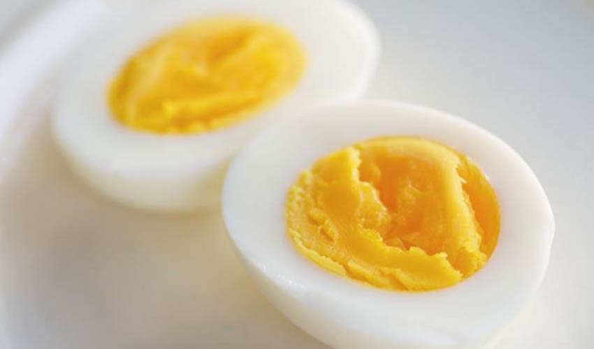

Сколько и как варить яйца
Нет такого человека, кто хоть раз в жизни не варил яйца. И наверняка многие сталкивались с ситуацией, когда яйцо треснуло и наполовину вылилось в воду, недоварилось или переварилось. Как ни странно, у такого простого действия, как варка яиц есть довольно много нюансов. Так давайте разложим этот процесс по полочкам и узнаем несколько небольших секретов, чтобы иметь возможность без проблем и проволочек приготовить яйцо той консистенции, которая нам необходима.
Время варки куриных яиц:
- в мешочек – 3 минуты;
- всмятку – 6 минут;
- вкрутую – 12 минут;
Перепелиные яйца:
- в мешочек – 30-40 секунд;
- всмятку – 1,5 минуты;
- вкрутую – около 3х минут
Страусиные яйца:
- в мешочек – 20 минут;
- всмятку – 45 минут;
- вкрутую – 90 минут.
В зависимости от вида и размера яйца варка занимает от полутора до 90 минут.
Калорийность яиц
- куриное яйцо – от 60 до 80 Ккал
расчёт: калорийность одного куриного яйца (без скорлупы) составляет 157 Ккал на 100г -
перепелиное яйцо – 20 Ккал
расчёт калорийности: средний вес перепелиного яйца около 12гр, калорийность около 168 Ккал на 100г - Расчёт калорийности страусиных яиц: вес страусиного яйца составляет от 1,2кг до 2,2кг, а калорийность его 160 Ккал на 100г.